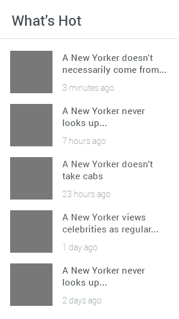
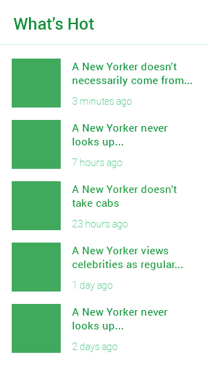
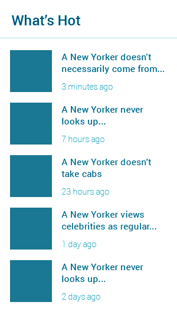

Best story you
have ever heard
24 minutes ago
Німецька кухня вирізняється великою різноманітністю страв зі свинини, телятини, яловичини, птиці, дичини, риби. Популярні різноманітні овочі, особливо капуста, картопля, найчастіше у відвареному вигляді. Широко розповсюджені кисломолочні продукти, бутерброди, страви з яєць. Ковбаски з кислою капустою та картоплею. імці надають перевагу негострій їжі, прянощі й приправи закладаються в страви дуже помірно, в цілому німецька національна кухня проста, багата, відрізняється великою розмаїтістю страв з овочей, м’яса, риби, борошна. Характерно для німців використання на сніданок і вечерю всіляких бутербродів (дослівно хліб з маслом) із різноманітними олійно-масляними масами, овочами, ковбасою, рибою. Закусочний стіл багатий стравами з овочів, шинки, ковбаси і сосисок, сардин і особливо з оселедця з різноманітними соусами (рольмопс), салатами з м'яса і різної риби, заправленими майонезом. Якщо вірити статистиці, то найулюбленіша їжа німців - сосиски. Причому, у кожному регіоні - свої сорти. Read more
 Later
Later
Here's What
Instagram Ads Will
Look Like
3 hours ago
Німецька кухня вирізняється великою різноманітністю страв зі свинини, телятини, яловичини, птиці, дичини, риби. Популярні різноманітні овочі, особливо капуста, картопля, найчастіше у відвареному вигляді. Широко розповсюджені кисломолочні продукти, бутерброди, страви з яєць. Ковбаски з кислою капустою та картоплею. імці надають перевагу негострій їжі, прянощі й приправи закладаються в страви дуже помірно, в цілому німецька національна кухня проста, багата, відрізняється великою розмаїтістю страв з овочей, м’яса, риби, борошна. Характерно для німців використання на сніданок і вечерю всіляких бутербродів (дослівно хліб з маслом) із різноманітними олійно-масляними масами, овочами, ковбасою, рибою. Закусочний стіл багатий стравами з овочів, шинки, ковбаси і сосисок, сардин і особливо з оселедця з різноманітними соусами (рольмопс), салатами з м'яса і різної риби, заправленими майонезом. Якщо вірити статистиці, то найулюбленіша їжа німців - сосиски. Причому, у кожному регіоні - свої сорти. Read more
Alex White
@alexwhite

Singolo is free PSD template
of flat, single page website
created by
@PsdChat #freebie
#psd http://bit.ly/19XM8Lj
2 hours ago
Saturday Career Workshops
are back at ADC! See what high
School students created this
week: http://bit.ly/Xx1EsL
6 hours ago
- 
- 
- 
Ask a Question
VIEW
MORE
STORIES
Deutsch Dishes
Німецька кухня вирізняється великою різноманітністю страв зі свинини, телятини, яловичини, птиці, дичини, риби. Популярні різноманітні овочі, особливо капуста, картопля, найчастіше у відвареному вигляді. Широко розповсюджені кисломолочні продукти, бутерброди, страви з яєць. Ковбаски з кислою капустою та картоплею. імці надають перевагу негострій їжі, прянощі й приправи закладаються в страви дуже помірно, в цілому німецька національна кухня проста, багата, відрізняється великою розмаїтістю страв з овочей, м’яса, риби, борошна. Характерно для німців використання на сніданок і вечерю всіляких бутербродів (дослівно хліб з маслом) із різноманітними олійно-масляними масами, овочами, ковбасою, рибою. Закусочний стіл багатий стравами з овочів, шинки, ковбаси і сосисок, сардин і особливо з оселедця з різноманітними соусами (рольмопс), салатами з м'яса і різної риби, заправленими майонезом. Якщо вірити статистиці, то найулюбленіша їжа німців - сосиски. Причому, у кожному регіоні - свої сорти. Read more
569 Shares 3,152 Views 21 Comments
"You know nothing, John Snow"